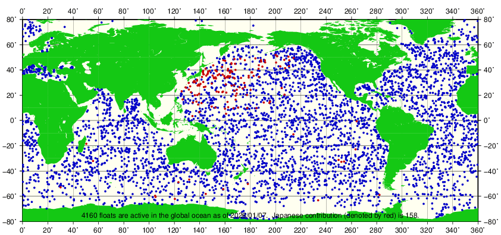

日本のアルゴ計画におけるデータ提供は、アルゴフロートのデータを即時的に公開する目的で、気象庁が運用するリアルタイムデータサイトと、高度な品質管理を施したデータを公開する目的で海洋研究開発機構が運用する高品質データベースによって行われます。アルゴ計画・リアルタイムデータサイトは、アルゴリアルタイムデータ（日本のアルゴリアルタイムデータ及びGTSで流通する世界のアルゴリアルタイムデータ）の提供を行うものです。
アルゴフロートの分布状況
赤丸が日本のフロート
※拡大したい海域を図上でクリックしてご覧ください
アルゴフロートの活動状況
- 新規投入フロートの情報
- 日本のアルゴフロートの活動状況
- 機関別アルゴフロートの活動状況
沖縄科学技術研究基盤整備機構 / 海洋研究開発機構 / 気象研究所 / 気象庁 / 国立極地研究所 / 中央水産研究所 / 東京大学大気海洋研究所 / 東北区水産研究所 / 東北大学 / 北海道大学 / 北海道区水産研究所
(かな順)
アルゴフロートのデータについて
高度な品質管等を経た全世界のアルゴデータのその時点での最新版は、全球データセンターであるフランス海洋開発研究所（IFREMER）及び米国海軍気象海洋センター（FNMOC）から提供されます。
全球データセンターのほかにも、気象庁が運用するフロートデータをまとめたページの他、OceanOPS、EuroArgoからもアルゴフロートのデータを確認することができます。
データ参照リンク
データの活用例
アルゴフロートのデータをはじめとする海洋の観測データを観測後ただちに取り込んで解析する海洋データ同化システムにより、海洋の状況の監視が行われています。海洋データ同化システムの出力は気象モデルの海面境界値として、気象庁の季節予報にも利用されており、アルゴフロートのデータを利用することでエルニーニョ予測や季節予報の精度が改善しています。
また、アルゴフロートのデータは、システム開発・改善のための入力データ・検証用データとしても利用されており、高度なデータ同化手法による長期的な気候・海洋の予測や、それらのシステムに生態系モデルを組み込み、漁業予測等への活用も試みられるなど、研究開発と連動しながらニーズの多様化に対応しています。
アルゴフロートを展開したいときは
新規PI向けに記載
アルゴ計画に関する記事
- 「アルゴデータシステム」（「測候時報」第69巻特別号2002年より）[HTML形式]
- 「第3回アルゴ科学チーム会合報告」（「海の研究」第10巻 第4号 2001年7月より）[HTML形式]
- 「Argo（アルゴ）計画」（「測候時報」第68巻特別号2001年より）[HTML形式]
- 「Argo（アルゴ）計画」（「測候時報」第68巻特別号2001年より）[HTML形式]
- 「Argo（アルゴ）計画」（「気象」2000年7月号より）[HTML形式]
※文献の引用に際しては出所を明記してください